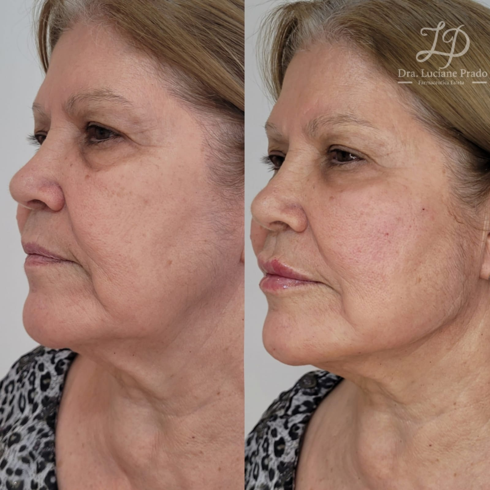
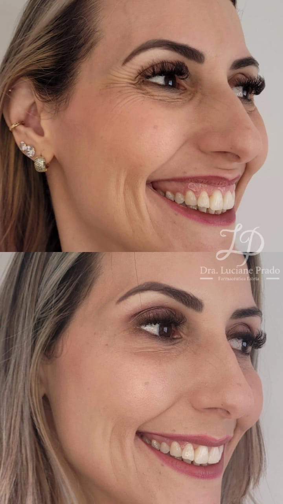
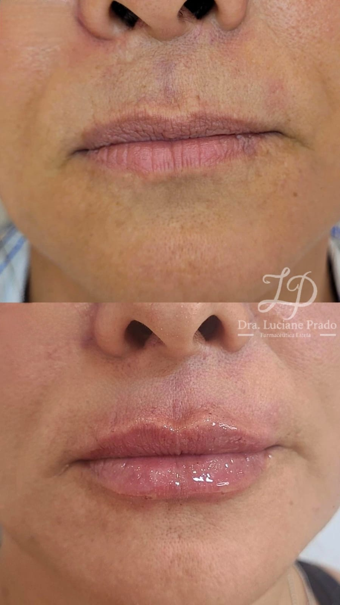
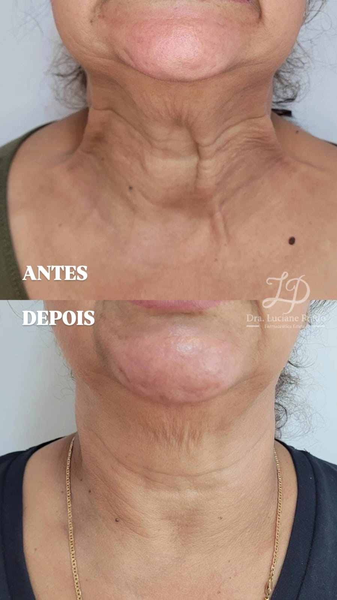
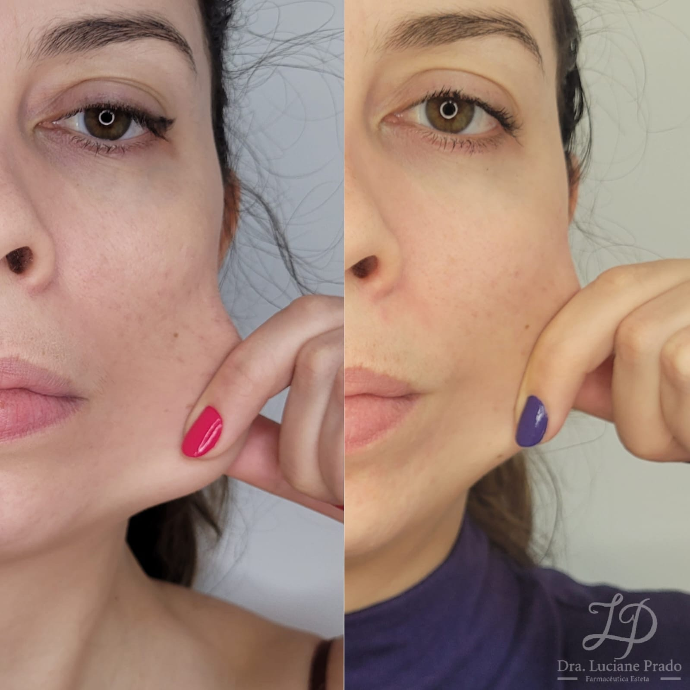
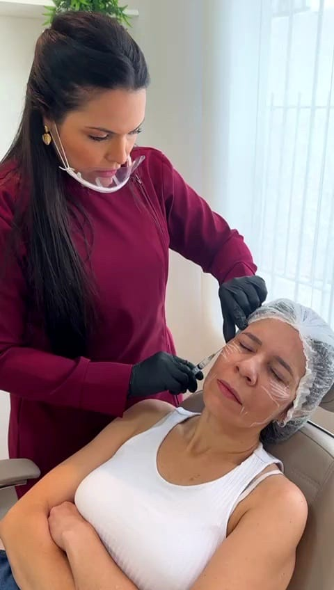
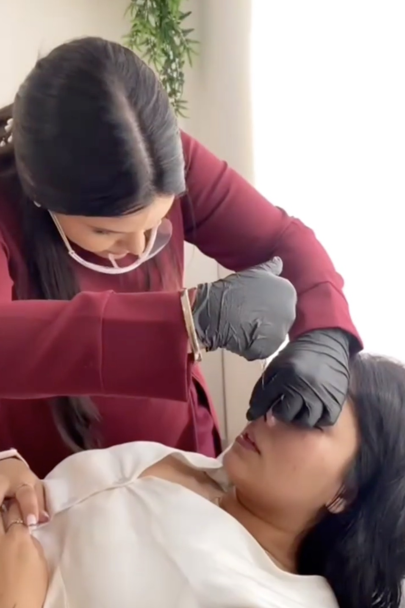
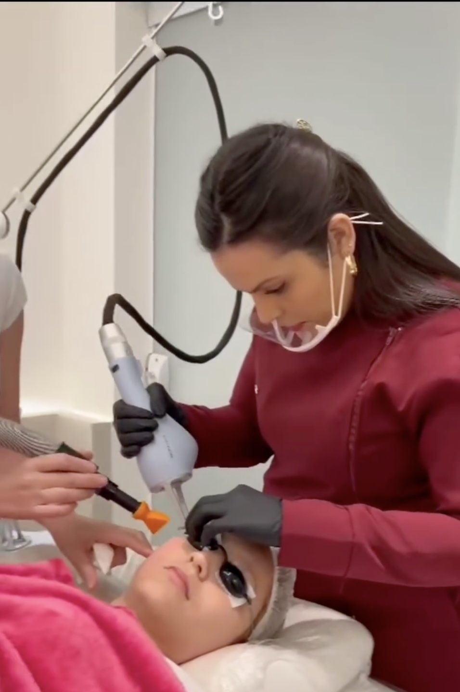

Toxina Botulínica
Suavização de linhas de expressão com dosagem individualizada, preservando a naturalidade dos movimentos.
Farmacêutica Esteta · Florianópolis / SC
Cada procedimento é pensado para respeitar a sua identidade, com resultados harmônicos, individualizados e conduzidos com segurança farmacológica do início ao fim.
Trajetória
Graduada em Farmácia desde 2017, construí minha base na saúde antes de direcionar minha atuação à Farmácia Estética, foco que assumi em 2022 em Londrina/PR. Uni o conhecimento farmacológico ao cuidado com a autoestima, desenvolvendo minha prática em harmonização facial, gerenciamento do envelhecimento e saúde da pele.
Hoje construo minha atuação na Grande Florianópolis, onde encontro um público que valoriza o autocuidado e a estética de alto padrão tanto quanto eu. Estou também em especialização em São Paulo com o Dr. Pedro Machado, em peelings profundos para rugas acentuadas e cicatrizes de acne, o que eleva ainda mais o nível técnico das minhas entregas.
Especialidades
Protocolos individualizados, sempre priorizando o gerenciamento do envelhecimento de forma harmônica e segura.
Suavização de linhas de expressão com dosagem individualizada, preservando a naturalidade dos movimentos.
Reposição de volume e contorno facial com abordagem global, sem perder a identidade do rosto.
Estímulo de produção natural de colágeno para firmeza, sustentação e melhora da qualidade da pele.
Tração tecidual e efeito lifting para áreas com flacidez, com resultado progressivo e natural.
Indução de colágeno com ativos direcionados à necessidade específica de cada pele.
Renovação celular com peelings de profundidade leve e média. Em breve, também peelings profundos para rugas acentuadas e cicatrizes de acne.
Suporte regenerativo complementar aos protocolos de pele e bem-estar.
Orientação farmacêutica personalizada para potencializar os resultados dos procedimentos em casa.
Resultados reais
Cada caso é único. Os resultados abaixo são de pacientes reais, atendidos com o mesmo cuidado que guia todos os protocolos.





Resultados que falam por si
“Olha o que você fez com meu rosto! Obrigada por levantar minha autoestima. Você é 1000.”
“Recebi altos elogios do meu bocão e já te indiquei, tá? Beijos.”
“Minha pele amanheceu radiante e sem vermelhidão. Parabéns pelo seu trabalho, muito feliz com o resultado.”
No dia a dia



Para clínicas
Busco uma parceria profissional com uma clínica que compartilhe os mesmos princípios que guiam meu trabalho: naturalidade, conexão real com o paciente e resultados de excelência. Se a sua clínica busca somar forças com uma profissional dedicada à estética avançada, vamos conversar.
Falar sobre parceria